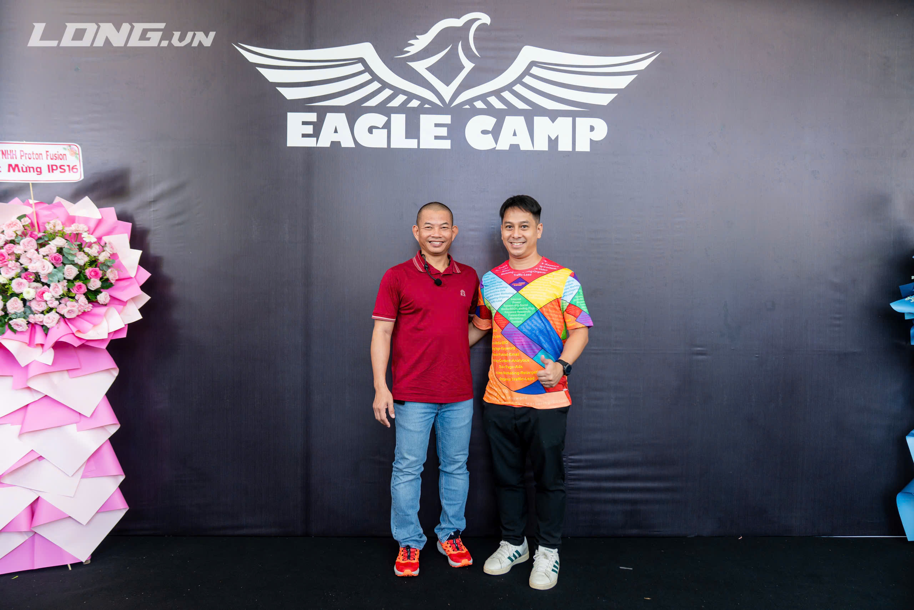

Về tôi
Tôi là Nguyễn Kim Hoàn (bạn bè gọi Jin) — chủ nhà hàng Samita Thái ở Linh Đàm. Blog này là nơi tôi viết lại những gì mình học được sau gần 10 năm và 6 lần mở quán, để bạn đi sau đỡ phải trả học phí đắt như tôi.

Bỏ Bến Đỗ "Làm Công Ăn Lương", Chọn Đam Mê Làm Chủ
Tôi sinh ra và lớn lên ở phố Lý Nam Đế, giữa lòng phố cổ Hà Nội — bạn bè hay gọi đùa tôi là "boy phố cổ". Học hết cấp ba, tôi có một năm đại học ở Việt Nam rồi du học Đức từ 2006 đến đầu 2013. Ngày về nước, việc đầu tiên tôi làm là cưới người phụ nữ mình yêu — chúng tôi quen nhau ở lớp tiếng Đức tại Viện Goethe Hà Nội. Giờ chúng tôi có ba đứa con.
Tôi khởi đầu ở một công ty dược, làm quản lý vùng đội trình dược viên khu vực phía Bắc. Nhưng đến tháng 4/2017, tôi nghỉ việc để đi theo thứ thực sự cuốn hút mình: món ăn và cách vận hành một nhà hàng. Đó là bước ngoặt lớn nhất đời tôi.
10 năm, 6 lần mở quán
Tôi không đi lên bằng lý thuyết. Tôi học nghề bằng cách tự mình mở quán, vấp ngã, rồi đứng dậy làm lại:
- 2016 — Quán Playstation ở phố Nguyễn Thượng Hiền, từng lọt top quán PS ở Hà Nội.
- 2017 — Quán bia hơi Hà Nội tại Linh Đàm, 275m², làm ăn phát đạt.
- 2018 — Quán cà phê ở Định Công: bài học đầu về giới hạn thời gian quản lý.
- 2019 — Quán nướng lẩu: đông khách rồi gãy vì Covid.
- 2022 — Nhà hàng bia tươi quy mô lớn: bài học đắt giá nhất, phải đóng cửa và gánh nợ.
- 2024 – nay — Samita Thái, thương hiệu tôi tự xây, tăng trưởng liên tục từ đầu 2026.
Vấp ngã đã dạy tôi điều gì
Có giai đoạn 2023–2024 tôi tưởng mình đứng không dậy nổi: mất mặt bằng quán bia đang đông khách, rồi nhà hàng bia tươi phải đóng cửa và gánh một khoản nợ lớn. Tôi hoang mang, chơi vơi. Nhưng thay vì bỏ cuộc, tôi gỡ tấm biển thương hiệu cũ xuống, tự xây thương hiệu của riêng mình — Samita Thái — và kiên trì thử đến khi tìm đúng hướng.
Bài học lớn nhất tôi rút ra là: phải có kiến thức tài chính. Tôi lớn lên với nguyên tắc "liệu cơm gắp mắm" — chi tiêu và đầu tư đúng khả năng thật của mình. Vậy mà vẫn có lần tôi chủ quan, không tính kỹ lãi suất, liều vay vốn mở quán và rơi vào bẫy tài chính. Chính vì trả giá thật, tôi mới muốn viết ra để người đi sau không lặp lại. Đó cũng là lý do phần lớn bài trên blog này xoay quanh chuyện mở nhà hàng ít rủi ro nhất.
"Ngày hôm nay đều phải tốt hơn ngày hôm qua một chút — nhưng lúc nào cũng vậy."
Tôi giỏi nhất ở đâu
Nếu có một thứ tôi có thể ngồi nói cả buổi mà không chán, đó là chuyện vận hành nhà hàng: nghiên cứu thị trường để chọn mô hình phù hợp với từng loại mặt bằng thuê, xây dựng menu, vận hành tổng thể, và tính cost món ăn để kiểm soát chi phí. Tôi cũng đã xử lý đủ loại tình huống thật — từ khiếu nại của khách đến mâu thuẫn nội bộ nhân viên.
Vì sao tôi viết blog này
Gần tuổi 40, tôi mới thật sự tìm thấy mục đích sống: tập trung vào sự nghiệp, chăm lo cho vợ con, và làm chủ được cuộc sống của mình. Ước mơ xa hơn là xây một chuỗi nhà hàng và nhượng quyền một cách chuyên nghiệp, bền vững. Nhưng trước hết, tôi muốn những gì mình học được bằng mồ hôi, nước mắt và cả tiền bạc không nằm yên vô ích trong đầu một người.
Ba từ tôi tự nhận về mình: vui vẻ, kiên trì, không bỏ cuộc. Nếu bạn cũng đang trên hành trình mở quán của mình, tôi mong blog này giúp được bạn đôi chút.
Bạn có câu hỏi về mở quán, vận hành hay kiểm soát chi phí nhà hàng? Nhắn cho tôi — tôi luôn sẵn lòng chia sẻ.
Email: ipshoannk26@gmail.com